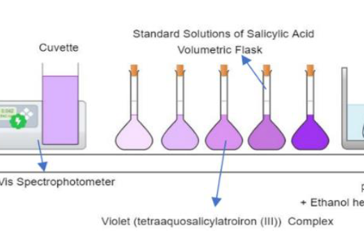
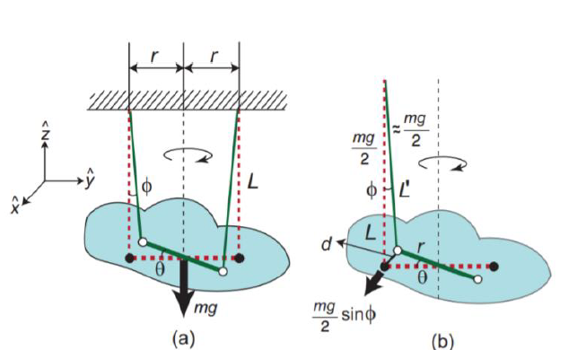
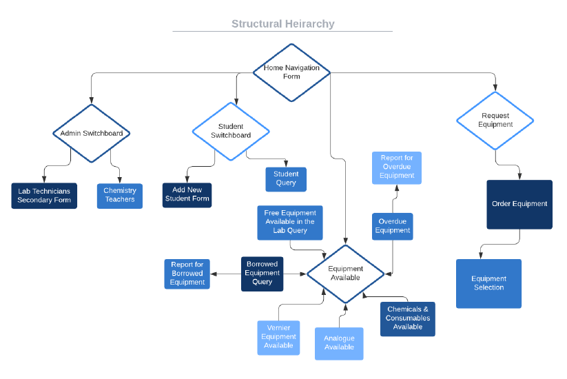
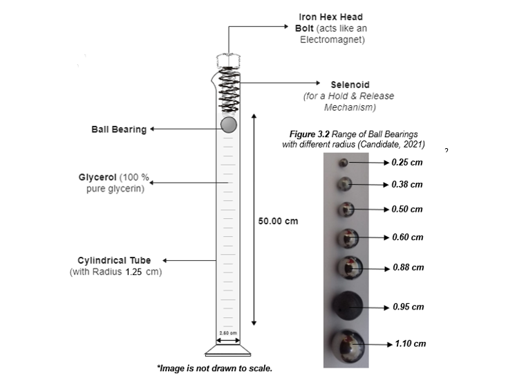

|
Welcome to the IB Coursework Repository! This page showcases sample IB coursework submitted for the May 2022 session for the IB Diploma Program. Here, you'll find the final versions of the internal assessments for Mathematics AA HL, Chemistry HL, Physics HL, ITGS Project, Extended Essay in Physics, and Theory of Knowledge. Feel free to utilize these samples as references, but please be aware that IB internal assessment requirements may have evolved since 2022. Therefore, it's advised to exercise caution when using them. Avoid plagiarism, as it not only violates IB regulations but also constitutes academic dishonesty, leading to severe consequences. Use these samples responsibly. |
IB Diploma May 2022 Coursework |
|
IB Mathematics Analysis and Approaches Higher Level:
Anusha Fatima Alam IB Diploma, May 2022 Internal Assessment PDF |
|
|  |
IB Chemistry Higher Level: (Official IB Mark 22/24)
Anusha Fatima Alam, IB Diploma, May 2022 Internal Assessment PDF |
|  |
IB Physics Higher Level
Anusha Fatima Alam IB Diploma, May 2022 Internal Assessment PDF |
|  |
IB Information Technology in a Global Society (ITGS) Standard Level
Anusha Fatima Alam IB Diploma, May 2022 Criterion A (Initial Consolutation) | Criterion A (Initial Investigation) | Criterion B (Analysis) | Criterion C (Project Schedule) | Criterion D (Product Design) | Criterion E (Product Development) | Criterion F (Feedback from Client) | Criterion F (Product Evaluation and Future Product Development | Video |

|
IB Core: Theory of Knowledge (TOK): Grade A
Anusha Fatima Alam IB Diploma, May 2022 TOK Exhibition PDF | TOK Essay PDF |
|  |
IB Core: Extended Essay in Physics: Grade A
Anusha Fatima Alam IB Diploma, May 2022 Extended Essay PDF |
{kind=link}
{kind=link}
{kind=link}
{kind=link}
{kind=link}